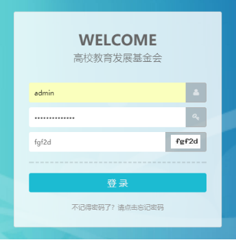
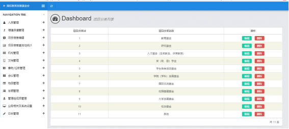
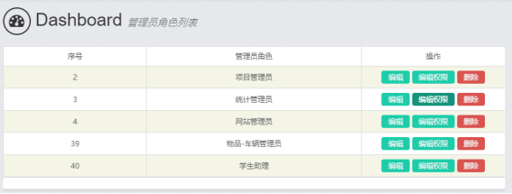
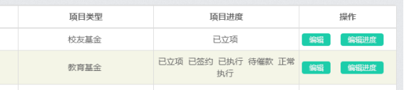
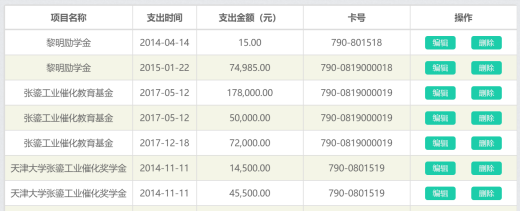

1 引言
1.1 编写目的
本操作手册提供给“高校基金会项目管理系统”后台管理员使用，该使用手册的编写是为了帮助系统管理员操作日常通知和系统维护。
1.2 系统名称
高校基金会项目管理系统
1.3 预期读者和阅读建议
预期读者：测试人员、项目管理人员、最终业务用户。
阅读建议：最终业务用户需要阅读全部内容，其他人员以此文档作为了解和使用本系统后台的参考手册。
2 后台模块
在浏览器地址栏输入高校基金会项目管理系统后台网址（系统主域名/management），进入系统后台，如下图所示：

后台登录
输入用户名“xxxx”、密码“*****”和验证码“fgf2d”，点击“”进入后台首页，如下图所示：
高校基金会项目管理系统后台首页
2.1 业务相关及系统设置
点击后台导航的“业务相关及系统设置”，进入界面，如下图所示：
后台全局面板
系统邮件SMTP设置：设置系统邮件设置，配置系统群发邮件，以及邮件通知的系统邮箱，其中可以再设置成功后进行发送测试邮件进行测试。
部门管理、项目分类和人员类型设置：积分和威望规则设置，是用户成为专家的评判标准和积分来源，规则内容由管理员设置，如图 2.3所示：


2.2 用户
点击后台导航的“管理组成员管理”进入用户界面，可以管理用户、创建管理员：
图 2.6 后台用户界面
2.2.1 用户管理
管理员列表：列表显示管理员，可以编辑管理员信息和删除管理员。

图 2.7管理员列表
添加用户（添加管理员）：添加管理员信息。
图 2.8添加管理员
用户角色列表：列表显示用户角色，可以编辑和删除用户角色。
每一个用户角色可设置角色内用户使用权限：“发表问题”“回复问题”“发布通知”“发起投票”。

图 2.9 编辑用户组权限
2.2.2 编辑管理员密码
编辑管理员密码：超级管理员可以对管理员的密码进行管理和编辑，如图 2.10所示：
2.3 内容管理
2.3.1 人员管理
图 2.13.1 人员管理
基金会相关人员管理，可以编辑人员或组织机构名称的名称，类型，Email，移动电话，办公电话，联系地址，名片等。
图 2.13.2 添加/编辑人员信息
2.3.2 项目信息编辑
项目信息编辑，包括：立项、签约、来款认领、支出、回馈和配比等功能。
图 2.3.2.1 项目信息编辑
立项申请审核：管理学院的立项申请，可查看，项目名称，所属部门，项目申请进度，并可以进行审核通过与驳回操作。
筹资立项：筹资立项是不需学院申请，有基金会内部建立项目，可以通过本功能手动立项。所属项目可以选择是否继承父类项目，如不选择说明为一级项目。父类项目主要用途包括：“一项多次”，“一项多协议”等情况，方便后期的统计和查询。
项目协议起始年份，截止年份，协议金额是否留本信息主要是方便日后的查询和统计。
图2.3.2.2 筹资立项页面
项目信息编辑：对项目的各属性进行编辑。其中包括两部分编辑：一，项目基本信息编辑，二，项目进度编辑。（进度编辑可以多选，项目进行状态，包括：已立项，已签约，已执行，待催款，正常执行，已结项等状态。）

图2.3.2.3 项目信息编辑
签约信息: 所有有关项目的协议文件以及签约信息都可以在这个模块功能中编辑和查询。

图2.3.2.4 签约协议
来款认领 - 财务推送认领：
菜单栏中来款认领 - 财务推送认领中，如果带有红色数字圆圈标识的代表有待处理的财务来款。其中数字代表未处理的条数。
图2.3.2.4 来款认领
对于财务来款认领，主要功能是，把财务的来款认领到具体项目，和项目系统关联。
删除功能：如果出现财务推送多次重复数据，需要我们手动点击删除，将该条推送作废。
或者无效数据也可以使用删除功能进行屏蔽。（这里的删除功能是逻辑删除，系统会保留原始数据，避免误删除带来的系提供不完整）
图2.3.2.5 财务来款认领
来款认领 - 添加来款：如为与财务系统进行对接，我们可以使用该功能，手动添加项目来款。具体添加内容如下图：
图2.3.2.6 添加来款
项目支出申请审核：该功能是对学院申请的项目支出使用进行审核。
项目支出：项目支出列表，可以查看所有项目支出和编辑。
项目支出 - 财务系统支出认领：支出有财务推送过来的信息，同步到项目系统。
项目支出 - 添加支出：除财务推送支出之外，还可以手动添加项目支出信息。
项目回馈：该功能是项目回馈信息的添加，可以添加，所属项目，回馈方式，回馈人，经办人，选择进度，是否已回馈，这个可以关联到项目进度。
回馈方式，可以选择致电、致函、当面拜访、赠送纪念品。
图2.3.2.6 添加回馈信息
项目调账：
项目退款：项目退款是针对某笔来款进行的退回操作，因为需要在系统中留痕，所以采用的方式是，在项目收入中新增一笔负收入，这样就可以保证项目余额的正确。
所有的退款信息，可以在项目详情页面的收入中查询到。

项目配比：

图 2.3.2.7 项目配比
项目配比支出：

项目收益：
2.3.3 项目信息查询与统计
项目信息编辑，包括：项目信息查询列表，项目签约统计，项目筹资、收入、支出、回馈等功能。
图 2.3.3.1 项目信息查询与统计菜单
项目信息列表：
图2.3.3.2 项目信息列表
图2.3.3.3 项目搜索功能
项目搜索条件包括：项目名称模糊查询、项目进度、项目负责人（可多选）、第一笔来款（创建时间）、收入时间（至今）、支出时间（至今）、项目类型（可多选）、所属部门。
图 2.3.3.4 项目收支详情
项目列表中可以直接查看，项目 总捐赠收入/总协议金额/余额（元）、最近一笔收入/支出。
项目签约信息统计：
图2.3.3.5 项目签约信息列表
可以根据项目签约名称，协议类型，签约时间、协议总金额、协议年度捐赠金额、协议捐赠方、捐赠用途等，对项目签约进行筛选。
协议类型包括：新签协议、补签协议、续签协议、改签协议。
备注：（补、续、改）协议：协议年度捐赠金额（元）、协议总捐赠金额（元）可以根据协议实际情况进行调整，如，金额未发生改变，可以酌情填写为 0 元，避免项目协议总金额等重复统计。
项目收入信息统计：
图2.3.3.6 项目收入信息统计管理
项目支出统计：
图2.3.3.7 项目支出信息统计管理
项目回款统计：
图2.3.3.8项目回馈列表
项目可申请项目配比查询：
图2.3.3.8 配比统计管理
项目已划拨项目配比查询：
图2.3.3.9 项目配比列表
与财务项目对照查询：
图2.3.3.10 财务系统对照
2.3.4 机构管理
机构管理主要包括：理事会、校董会、秘书处的管理。
图 2.3.4.1 机构管理
2.3.5 文档管理
文档管理：对基金会内部文档的归档和查询等管理。
图 2.3.5.1 文档管理
2.3.6 事务/任务管理
事务/任务管理：任务管理可以指定工作任务，协作人，工作进度等。
图 2.3.6.1 事务/任务管理
2.3.7 会议管理
文档管理：对基金会内部文档的归档和查询等管理。
图 2.3.7.1 文档管理
2.3.8 物品管理
物品/礼品管理：对基金会内部的物品和礼品进行统筹管理。
对于，某一种物品和礼品，可以进行赠送记录登记，方便统计库存以及后期可以追述回馈历史。
图 2.3.8.1 物品/礼品管理
2.3.9 车辆管理
车辆管理：对基金会车辆的管理，可以新增修改查询车辆信息。
还可以新增车辆的使用情况，方便调度基金会内部车辆。
图 2.3.9.1 车辆管理
2.3 日志管理
日志管理：可以根据日志明细时间区间进行查询对项目编辑修改的操作日志。
图 2.4.10 日志管理
3 工具
3.3 项目选择插件
可以使用项目选择功能进行项目的筛选和选择
图3.3.1 项目选择器
功能支持关键词检索，方便快速找到项目。
图3.3.2 关键词快速查询
3.4 快捷添加人员信息连接
在页面中如果查询人员信息还未添加，可以在input框后面，点击添加人员信息，进行快速添加人员信息。
图3.4.1 快速添加人员信息入口
点击“添加人员信息”即可弹出添加人员信息表单，进行快速添加
图 3.4.1 添加人员信息
3.5 批量选择控件
通过批量选择控件，我们可以多选进行填写表单，例如：可以多选项目负责人。

图3.5.1 批量选择插件
4 数据备份
数据备份需要使用phpmyadmin数据库管理工具进行备份
图4.1.1 数据库管理软件